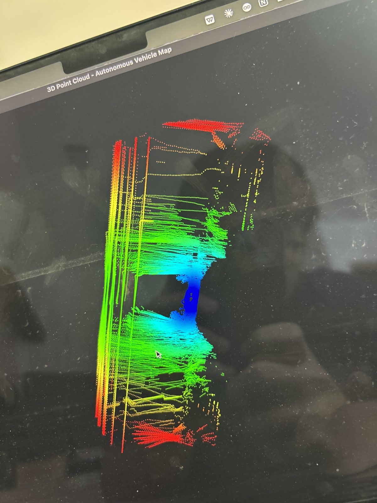
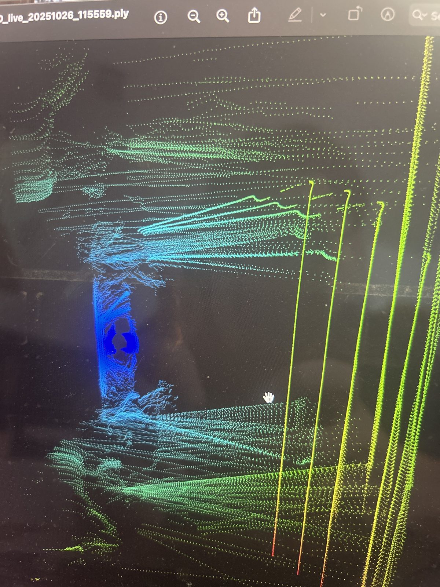

Autonomous Pookie
Personal project: 1/10 scale self-driving RC car
The Goal
I wanted to understand how self-driving cars like Waymo sense the world around them. The best way to learn was to build a small one myself: a 1/10 scale RC car that can scan its surroundings and drive on its own.
What I did
Designed and built the car from the ground up on a Raspberry Pi, with independent 4-wheel steering driven through GPIO and PWM in Python and C++ at under 10 ms latency. Mapped rooms with 3D LiDAR, aligning scans with Open3D and ICP (iterative closest point).
The Result
Trained a TensorFlow network on the localization data to predict motor commands, reaching 92% path-following accuracy.

